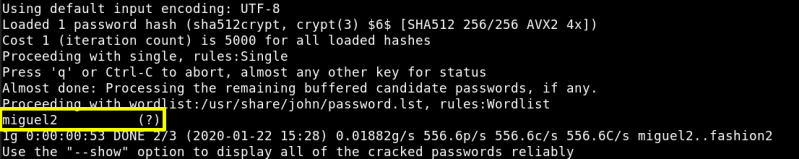

5.1 Password Cracking
Crack the password with “john the ripper” tool.
On your Kali Linux Machine
Create a file called hash.txt and copy the md5 password ($6$JNHsN5GY.jc9CiTg$MjYL9NyNc4GcYS2zNO6PzQNHY2BE/YODBUuqsrpIlpS9LK3xQ6coZs6lonzURBJUDjCRegMHSF5JwCMG1az8k.) on it.
Run the following code.
Output:

So the password for “root” is “miguel2”. Index
Index